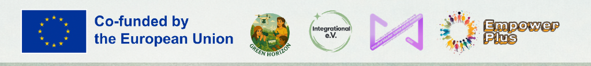

Empowering Youth Through Climate Tech
Green Horizon: Youth Voices for Climate Action Through Drone Technology is an Erasmus+ Small-scale Partnership in Youth (KA210-YOU) active from 1 May 2025 to 31 August 2026.
Why Green Horizon?
Europe’s ecosystems face intense climatic pressure: erratic hydrological cycles along major rivers, persistent drought across Mediterranean and Anatolian plains, and severe canopy mortality in ancient mountain ranges. While scientific reports are plentiful, they frequently struggle to communicate urgency to grassroots communities and young generations.
At the same time, rapid advancements in affordable Unmanned Aerial Vehicles (UAVs) and open-access spatial tools offer unprecedented avenues for non-invasive ecological monitoring. Green Horizon harnesses this convergence. By placing aerial sensors and cinematic cameras directly into the hands of youth workers and young creators, we transform complex climate indicators into transparent, emotionally resonant digital narratives.

- Programme: Erasmus+ KA210-YOU
- Action: Small-scale Partnerships in Youth
- Call & Round: Call 2024 Round 3
- Application Form ID: KA210-YOU-AB0390DF
- National Agency: DE04 - JUGEND für Europa (Germany)
- Lump Sum Grant: €60,000.00
- Duration: 16 Months (1 May 2025 – 31 August 2026)
- Coordinator: Integrational e.V., Germany (OID: E10325233)
- Partner TR: IESA, Türkiye (OID: E10315828)
- Partner RO: Empower Plus, Romania (OID: E10309212)
- Official Web Portal: https://greenhorizonyou.eu
Erasmus+ Horizontal Priorities Addressed
Green Horizon contributes directly to the European Commission's core policy priorities as outlined in the Erasmus+ Programme Guide.
Environment and Fight Against Climate Change
Equipping youth workers and young generations to document localized climate changes, build environmental awareness, and foster eco-responsible grassroots behaviors through aerial media and digital storytelling.
Digital Transformation & Capacity
Developing digital readiness, resilience, and high-tech capacity across youth organizations by introducing drone flight systems, 4K aerial videography, 360° VR exhibitions, and non-linear video editing.
Inclusion and Diversity
Ensuring active participation of marginalized youth and young people with fewer opportunities (refugees, immigrants, low-income youth, and rural youth) with at least 50% target participation in local workshops.
Six Concrete Project Objectives
The proposal defines six interconnected objectives to empower youth, train youth workers, and generate open European climate tools.
Develop Digital & Environmental Literacy
Equip youth workers and young people with hands-on skills in drone operation, aerial photography, videography, and digital storytelling to document and raise awareness of climate change impacts.
Raise Awareness About Climate Change Impacts
Through 6 documentary videos and a hybrid photo exhibition, showcase real-world examples of climate change in local communities across Germany, Romania, and Türkiye.
Foster Cross-Cultural Collaboration & Civic Engagement
Enable youth from diverse cultural backgrounds to collaborate on climate advocacy through transnational mobilities, localized workshops, and community events.
Promote Social Inclusion
Ensure marginalized and underrepresented youth (at least 50% of workshop participants) are actively involved, providing equal access to high-tech digital skills and environmental platforms.
Empower Youth to Take Action
Provide youth with the practical skills and confidence needed to become proactive agents of change, using visual media to advocate for sustainable environmental practices in their communities.
Create Innovative Educational Resources
Develop a comprehensive, open-access Booklet on Drone Operation, Photography, and Effective Ways to Mitigate Climate Change, alongside a 360° VR exhibition, serving as enduring tools for European youth work.
Target Groups
1. Local Communities
Local residents and communities across Germany, Türkiye, and Romania benefiting from content produced by youth participants. Online platforms and local exhibitions highlight environmental changes in their immediate surroundings, inspiring intergenerational dialogue and climate action.
2. Environmental Stakeholders & Youth Workers
Local and regional environmental NGOs, climate activists, youth leaders, and municipal policymakers. The project equips 18 youth workers with advanced drone/video methods and provides environmental stakeholders with powerful visual content for evidence-based advocacy.
3. Marginalized & Underrepresented Youth
Young people aged 16–30 from disadvantaged backgrounds, including immigrants, refugees, and youth from low-income or rural families. In accordance with the application, at least 50% of the 60 local workshop participants are recruited from groups facing fewer opportunities.
Our Methodology
Non-Formal Experiential Learning
Hands-on flight simulation, field flight exercises under certified mentorship, and collaborative media sprints where participants learn through direct creative action.
Peer-to-Peer Knowledge Cascade
Youth workers trained in transnational mobilities return to act as local mentors, facilitating localized workshops in their native languages across Germany, Türkiye, and Romania.
Open Source & Digital Ethics
Strict adherence to aviation safety codes, privacy regulations (GDPR), ethical wildlife photography practices, and open-access licensing for all produced intellectual outputs.
The Power of Transnational Collaboration
Environmental degradation does not stop at national borders. Connecting diverse European biomes creates unprecedented learning depth.
Germany // Atlantic-Continental Biome
Focuses on industrialized river corridors (Rhine basin), alluvial wetland dynamics, and municipal heat island mitigation in dense urban environments.
Türkiye // Anatolian Steppe & Wetlands
Examines rapid endorheic basin drying (Lake Tuz), agricultural aquifer depletion, and saline wetland bird sanctuaries facing severe aridity.
Romania // Carpathian Mountain Canopy
Investigates primeval old-growth forests, canopy health across steep mountain valleys, and ecological wildlife corridors under climate stress.